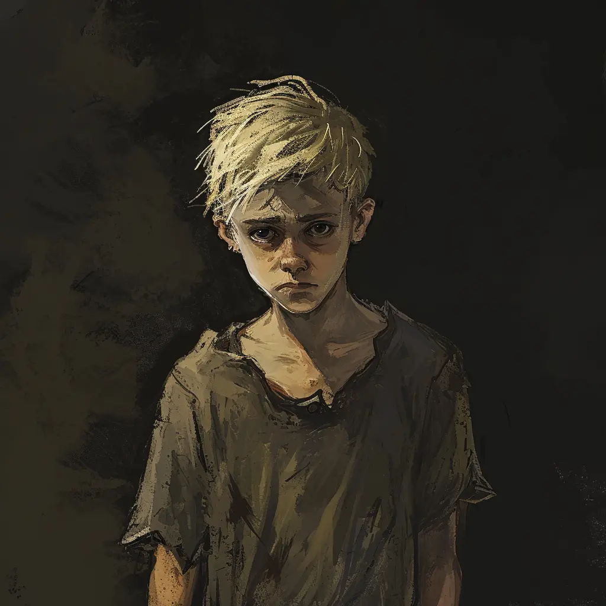

NSCs
Felix
Dämonisches Waisenkind von einem Hof in der Nähe von Vallaki

9 Jahre
Beschreibung: Mag die Ruhe. Schnitzt nicht, um etwas zu machen, schaut aus dem Fenster, schnitzt falsch, zu sich hin, hat sich schon ein paar Mal in die Finger geschnitten, ist sehr aufmerksam und ruhig, wird auch durch Magie nicht aus der Ruhe gebracht, auch wenn er die Augen weitet. Er legt lächelnd den Kopf schief, als er Malduk in Wasserform sieht, als würde er dumm sein oder verstehen. Er singt ein Kinderlied, das davon handelt, dass einer Fliege die Beine rausgerissen werden. Badewannen mag er nicht.
Geschichte: Felix lebt erst seit ein paar Monaten im St. Andrals Waisenhaus. Vor seiner Ankunft stieß Felix auf ein verfluchtes Medaillon (Felix' Medaillon) und befreite einen darin gefangenen Dämon. Der Dämon nahm von Felix Besitz und zwang ihn, seine eigenen Eltern zu ermorden, woraufhin er in das St. Andrals Waisenhaus geschickt wurde.
Felix' Dämon wurde von einem Kleriker, dem es nicht gelang, ihn zu besiegen, im Medaillon versiegelt. Obwohl der Dämon jetzt, da er ein humanoides Gefäß hat, über große Macht verfügt, ist er technisch gesehen immer noch nicht frei von dem Medaillon. Nur wenn er eine außergewöhnlich starke Seele verschlingt, kann er endlich frei werden. Die Krankheit, an der Milivoj langsam stirbt, ist in Wirklichkeit die Auszehrung seiner Seele. Wenn Milivoj stirbt, wird das Ritual abgeschlossen sein und der Dämon wird die Bewohner des Waisenhauses abschlachten. Im Moment ist Felix nicht Felix. Er ist der Dämon. Er verhält sich wie ein junger Soziopath mit einem Talent für Unwahrheiten. Seine emotionale Bandbreite ist recht gering, und er zeigt fast kein Mitgefühl für die Nöte anderer und lächelt, wenn Cedriks Tod erwähnt wird.
Zitat: "Ich verstehe nicht, warum alle so bestürzt waren, als Cedrik starb. Ich habe seinen Körper gesehen. Er hat nur ein bisschen geblutet. Meine Eltern haben viel mehr geblutet und mir geht es gut."
Notizen:
- Gestörtes Kind. Eltern vor seinen Augen zerfetzt worden. Hat einen Dämon in sich getragen.
KI-Zusammenfassung
Felix ist eine Figur aus dem Bereich Vallaki / St. Andrals Waisenhaus / Waisenkinder. Die lokalen Notizen halten dazu fest: Dämonisches Waisenkind von einem Hof in der Nähe von Vallaki Beschreibung: Mag die Ruhe. Schnitzt nicht, um etwas zu machen, schaut aus dem Fenster, schnitzt falsch, zu sich hin, hat sich schon ein paar Mal in die Finger geschnitten, ist sehr aufmerksam und ruhig... Geschichte: Direkte Bezüge bestehen zu Vallaki, St. Andrals Waisenhaus, Felix' Medaillon, Milivoj, Cedrik. Felix wird außerdem in Claudia Belasco, Milivoj, Cedrik, St. Andrals Waisenhaus, Tagebuch von Frau Belasco erwähnt. Diese Zusammenfassung folgt ausschließlich den vorhandenen Notizen und ergänzt keine neuen Fakten.